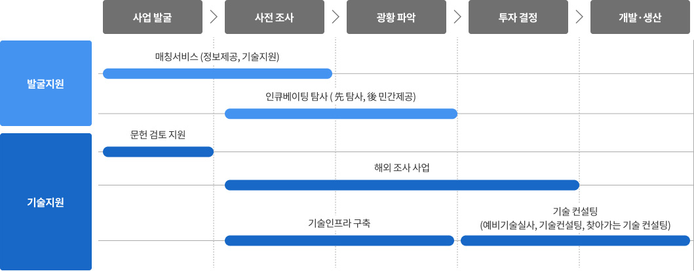

해외자원개발지원
한국광해광업공단은 국내외 자원개발 사업을 추진하는 민간기업의 사업 리스크를 줄이고 성공률을 높이기 위해 자원탐사-개발-생산으로 이어지는 전주기 단계별 기술, 행정을 지원합니다.
광물자원을 확보하려면 직접 개발하거나 공급업체로부터 장기계약을 통해 구매해야 합니다. 보이지 않는 땅속 자원을 확인해 개발하는 자원개발 사업은 초기 투자비용이 크고 투자비 회수까지 오랜 시간이 소요되는 것이 특징입니다, 그러나 일반재화처럼 생산원가 형태로 광물가격을 지불하는 것은 아니므로 개발 성공 시 높은 이익을 기대할 수 있습니다.
공단은 해외자원개발사업을 추진하는 민간기업의 사업 리스크를 줄이고 성공률을 높이기 위해 자원탐사-개발-생산으로 이어지는 전주기 단계별 기술, 행정을 지원합니다.
해외자원개발 종합민간기술지원사업 추진절차

광해방지사업추진절차는 사업발굴 > 사전조사 > 광황 파악 > 투지결정 > 개발·생산의 과정을 걸칩니다.
발굴지원
발굴지원
- 매칭서비스(정보제공, 기술지원) : (시작)사업발굴 -> (끝)사전조사
- 인큐베이팅 탐사 ( 先 탐사, 後 민간제공) : (시작)사전 조사 -> (끝)광황 파악
- 문헌 검토 지원 : (시작,끝)사업 발굴
- 해외 조사 사업 : (시작)사전조사 -> (끝)투자결정
- 기술인프라 구축 : (시작)사전조사 -> (끝)광황 파악
- 기술 컨설팅(예비기술실사, 기술컨설팅, 찾아가는 기술 컨설팅) : (시작)투자결정 -> (끝)개발·생산
자원탐사는 지표와 지하에 분포하고 있는 유용한 광석을 찾아내는 일입니다. 현지조사 및 문헌연구를 통해 지질, 광상, 품위, 매장량 등을 파악하여 광산개발 가능성 여부 등을 판단하면 본격적인 개발이 진행됩니다. 공단은 민간기업이 해외자원개발사업을 용이하게 추진할 수 있도록 탐사단계의 조사를 지원하고 초기 유망프로젝트 발굴부터 개발단계에서 필요한 전문기술을 제공하는 기술을 제공합니다.
조사지원
초기단계 해외자원개발사업의 투자리스크 경감을 위해 민간기업의 의뢰를 받아 해외자원개발 초기단계 사업에 대한 각종 조사를 직접 수행하고 탐사비용을 지원합니다.
- 민간투자 예정 사업에 대한 광체부존과 개발 가능성 검토 후 사업추진 여부와 방향제시
- 초기탐사 및 결과분석 자료 검토 등 민간의 탐사 활동에 필요한 비용 및 기술지원, 정부 간 협력 탐사 수행
- 지분인수 등 투자 전 필요한 기술부분의 실사를 지원하고 민간 외부용역에 대한 적정성 검토와 비용 지원
기술지원
민간의 해외자원개발 역량 강화와 사업추진 용이성 확대를 위해 해외자원개발 전문가들이 유망프로젝트 발굴부터 기술컨설팅까지 자원개발 기술의 A-to-Z를 지원합니다.
- 매칭서비스
- 해외 유망프로젝트 풀(Pool)을 구축해 투자정보를 제공하고 탐사계획 수립, 현지조사 등 탐사분야 기술 지원
- 인큐베이팅 탐사
- 공단이 발굴, 탐사한 유망사업을 민간에게 이양해 초기탐사단계 리스크는 감소하고 성공률 제고 유도
- 문헌검토 지원
- 민간기업이 사업추진 전 입수한 서면자료 기술검토 지원
- 기술컨설팅
- 공단 보유한 광산평가 기술력을 활용해 민간 해외 투자사업 신규 진출 및 운영 관련 기술적 문제에 대한 통합 기술자문 제공
- 기술인프라 구축 지원
- 민간기업 추진 사업의 조사자료(지형도 등) 도면 전산화 무료 지원
정보관리
정보관리
- 홍보팀 홍길동 033-000-0000
- 홍보팀 홍길동 033-000-0000
최종수정일0000-00-00
- 이 페이지에서 제공하는 정보에 대하여 만족하십니까?